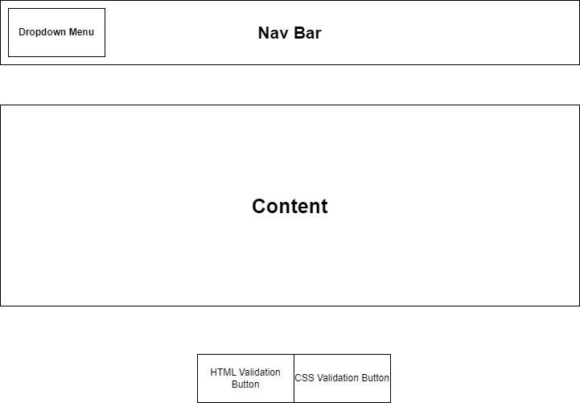
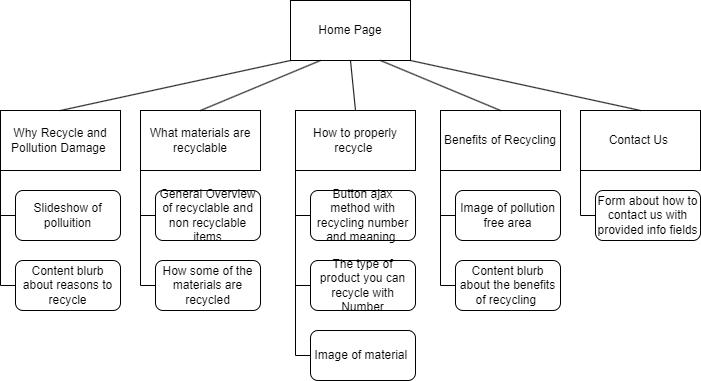

Project Proposal
Project Overview
My website is going to serve as an informational website in order to inform people on the benefits of recycling while also teaching the correct way to recycle and all the unseen benefits to it. Intended users of the website would be people interested in recycling and the benefits it could offer, that could be anyone old or young, male or female.
The content of the website will contain reasons to recycle, what specific numbers with recycling mean and what content can be recycled with what numbers. It will contain images of areas with poor recycling habits and areas with high recylcing. It will also contain a form to obtain information to volunteer at nearby recycling plants and highlight areas with good recycling.
Client Information
| Name | Orginization | Phone Number | |
|---|---|---|---|
| Haley Siharath | UNCC Student | hSihrat@uncc.edu | Private |
Wireframe
Site Map
Page Design
The following paragraphs will cover the page designs for the pages covered in the Site Map provided above.
Home Page
The home page will serve as the landing page for the website and be the person's inroduction to the site and set a theme for what is to come for the rest of the site.
The home page will contain a brief introduction to the site as well as an overview of why recycling was important to the client.
- Will the page ask for users to enter data? If so will it need validated?
- No, The users will not be required to enter data into this page
- Will this page contain hyperlinks?
- It will contain a nav bar at the top with a dropdown menu that contains links to other pages
- What actions will happen on this page?
- As it is a homepage its main purpose is to navigate to other pages
Why Recycle and Pollution Damage
This page serves to inform the user the purpose behind recycling as well as the pollution damage that can result from not recycling and overall being green conscientious.
The content of the site will include a slideshow of images that contain photos of places where pollution is high, images such as the trash island in the pacfic. After that it will contain a content blurb on the goal of pollution and the damages not polluting can cause.
- Will the page ask for users to enter data? If so will it need validated?
- No, The users will not be required to enter data into this page
- Will this page contain hyperlinks?
- It will contain a nav bar at the top with a dropdown menu that contains links to other pages
- What actions will happen on this page?
- The purpose of this page is to inform about recycling and the dangers around not recycling
How to properly recycle
The purpose of this page is to inform the user about how to properly recycle in today's world, the specific meaning behind proper recycling symbols, and other conventions of recyling. This page will contain a button with blurbs about the numbers and the associated materials that can be recycled with them.
- Will the page ask for users to enter data? If so will it need validated?
- No, The users will not be required to enter data into this page
- Will this page contain hyperlinks?
- It will contain a nav bar at the top with a dropdown menu that contains links to other pages
- What actions will happen on this page?
- The purpose of this page is to show the correct way to recycle, through button presses and dynamic data loading, details along with images will be loaded using ajax
What materials are recycleable
The purpose of this page is to give an overview of materials that are considered recyclable and some of the materials that these recyclabe materials turn into post recycling.
- Will the page ask for users to enter data? If so will it need validated?
- No, The users will not be required to enter data into this page
- Will this page contain hyperlinks?
- It will contain a nav bar at the top with a dropdown menu that contains links to other pages
- What actions will happen on this page?
- This page itself will contain no actions just data and content
Benefits of Recycling
The main purpose of this page is to further drive home the importance of recycling and show benefits it can provide to areas as well as show areas that have been bettered because of recycling
- Will the page ask for users to enter data? If so will it need validated?
- No, The users will not be required to enter data into this page
- Will this page contain hyperlinks?
- It will contain a nav bar at the top with a dropdown menu that contains links to other pages
- What actions will happen on this page?
- This page itself will contain no actions just data and content
Contact Us
The purpose of this page is to host a form that will take the users information including email,phone-number,name,and a mini questionarre about the users interest in recycling.
- Will the page ask for users to enter data? If so will it need validated?
- The users will enter various forms of data all with appropriate validation
- Will this page contain hyperlinks?
- It will contain a nav bar at the top with a dropdown menu that contains links to other pages
- What actions will happen on this page?
- The page will have a form submit and reset button for the form on the page
Dynamic Functionality
This project will contain various elements that use JS and Dynamic functionality including a form that allows the user to input information, an interactive slideshow of various images, and button's that dynamically load data using an ajax function.